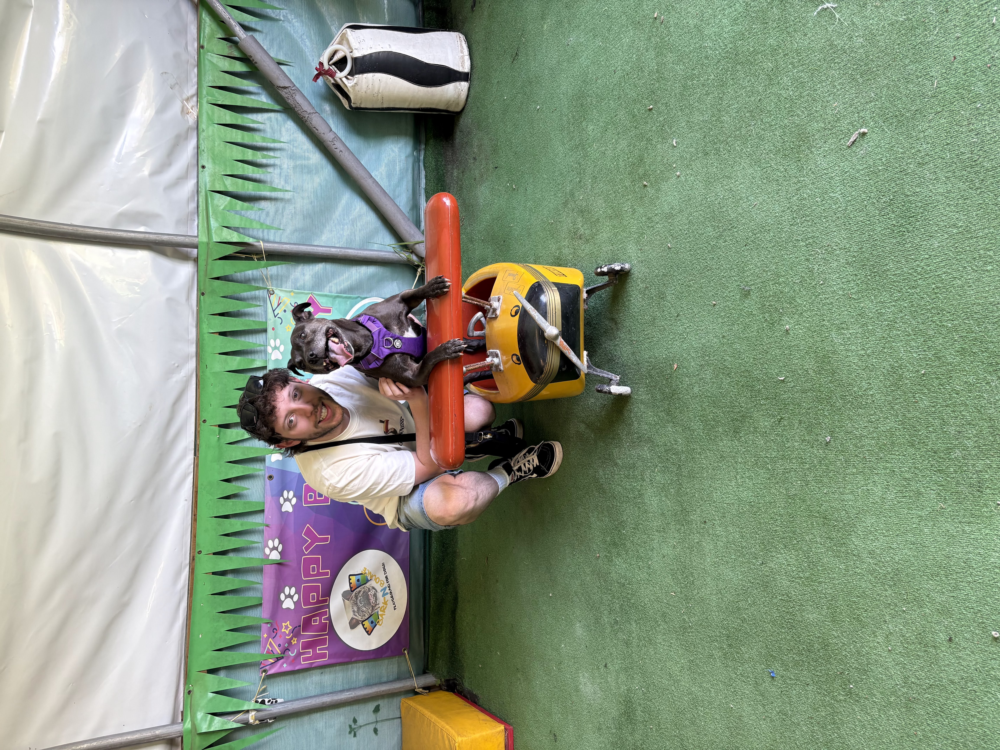

A dedicated, pragmatic and buoyant Software Engineer with experience working collaboratively in an agile environment building high quality scalable back-end systems for a fast-paced, high traffic business. Brings a strong learning mindset, proven on-call responsibility and a focus on improving system observability and performance.
Outside of work, I enjoy maintaining an active lifestyle by working out, playing football and walking my dog. I also love to play video games, learn new technologies and expand my knowledge.
View CVLooking for a career change, I joined Sky Betting and Gaming as a Technology Graduate. This graduate scheme was a degree apprenticeship where I worked day to day in an event streaming team whilst completing a Level 7 Master's apprenticeship in Digital Solutions. The team was responsible for building minimal latenxy, highly scalable message bus systems using a stack of JavaScript + Kotlin, Gradle for test automation, Jenkins for CI/CD and Docker for containerization. These apps were hosted on a combination of Kubernetes, Linux VM's and AWS. Notable projects included contributions to Bet Recommendation Builder (pictured), Horse Racing Metadata and Football Metadata API.
With the acquisition of SBG by Flutter Group, the brand was aligned with Paddy Power and Betfair. This involved the deprecation of the current stack, and required the team and I to move to their technology. This was JVM based, coded in Java 8-21 and Scala. Maven was used for test automation, and Go pipelines for deployment to Linux VM's. This period required significant upskilling, and exposed me to new technologies. The major project for my team was Acca Freeze (pictured) to fill a product gap.
My degree established the fundamentals of software engineering, covering how to write logic through to deploying applications. My dissertation was focused on improving observability of the team's current tech stack, implementing new metrics to more effectively track in-app latency, and configuring alerts to minimise pages for on call engineers. Pictured is a dashboard I created as part of this project, which I achieved a distinction on.
Interested in working together? Let's connect.
Email me